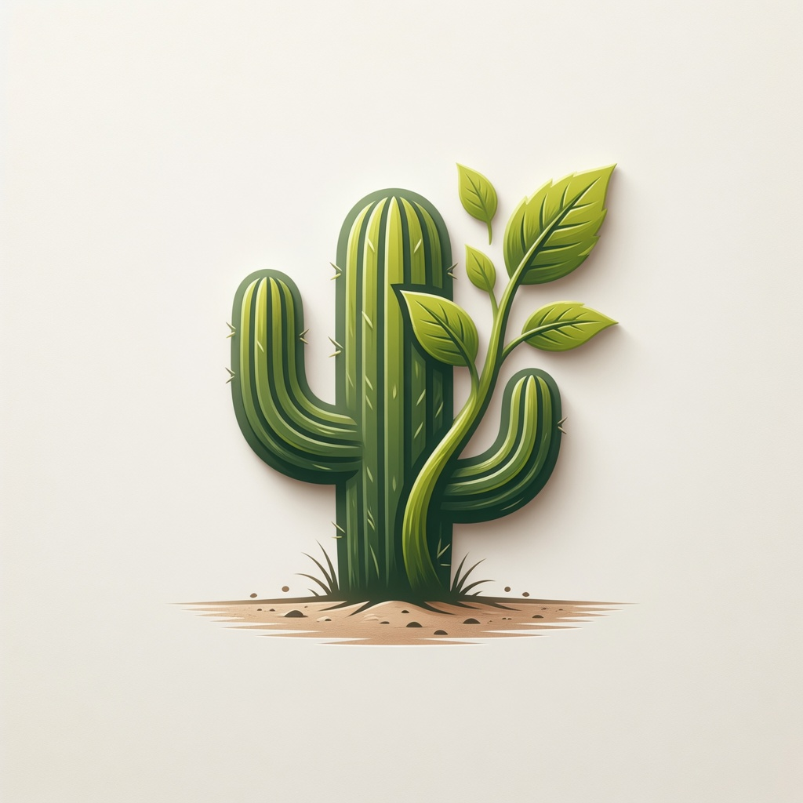
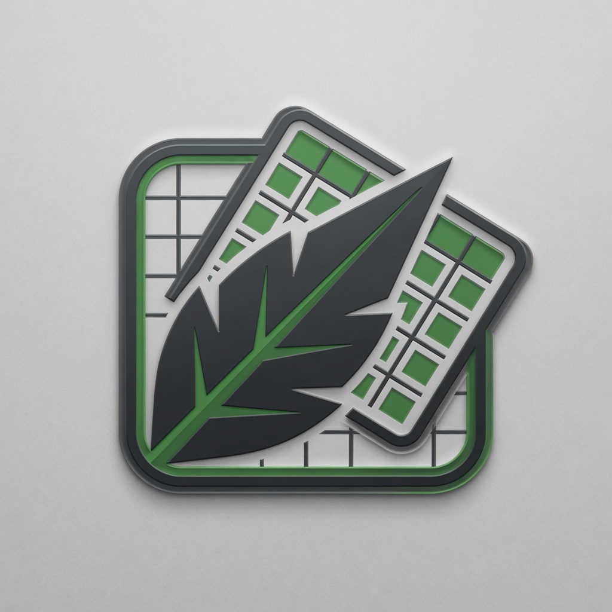

Generated with Grok Imagine. Shown on white so the mark's own silhouette is judged, not the plate it was drawn on. The app's visual direction is Technical: flat surfaces, 1px borders, 4px radius, cool neutrals — so glossy 3D bevels are off-brief regardless of how they look here.

01 cactus seedling
not yet reviewed

02 geometric grid
REJECTED — glossy 3D emboss, bevels and drop shadow. Off-brief for a flat Technical direction, and it will turn to mud at 32px favicon size.
03 bold silhouette
STRONGEST — flat, single colour, high contrast, reads as seedling + sun + soil. Needs a transparent background instead of the beige plate, and the sun spikes want simplifying for small sizes.